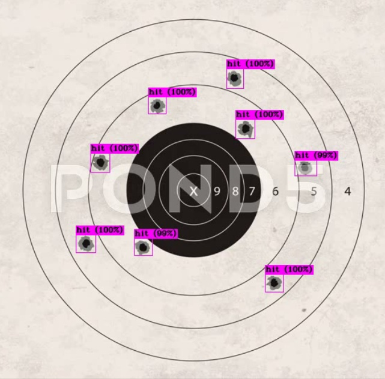
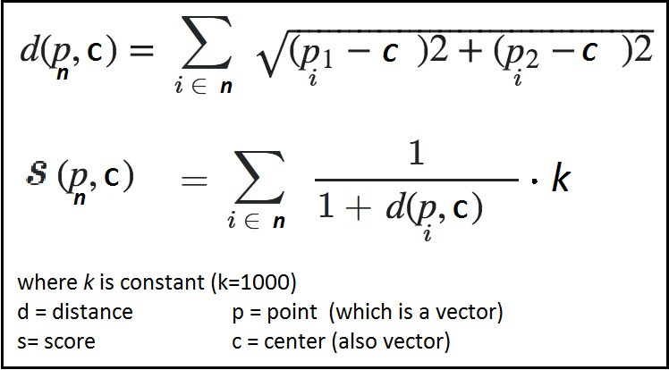
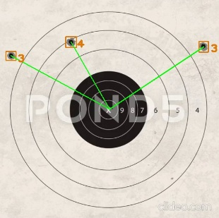

Introduction:
Shooting Range project is about Automated Calculation of Score
board for a Shooting Target, this project is consist of
following programming terms and technologies:
Particulars:
-
OpenCV:
for image processing
-
YOLOv4 (You Only Look Once):
for bullet hit point detection on images and video Frames

-
Euclidean-Distance:
for calculating distnce between center to hitpoint and
scores.


-
Flask:
for web-development and back-end logics
-
HTML5, CSS3, Javascript, Bootstrap: for
web-design and front-end logics
-
Firebase:
for user authentications